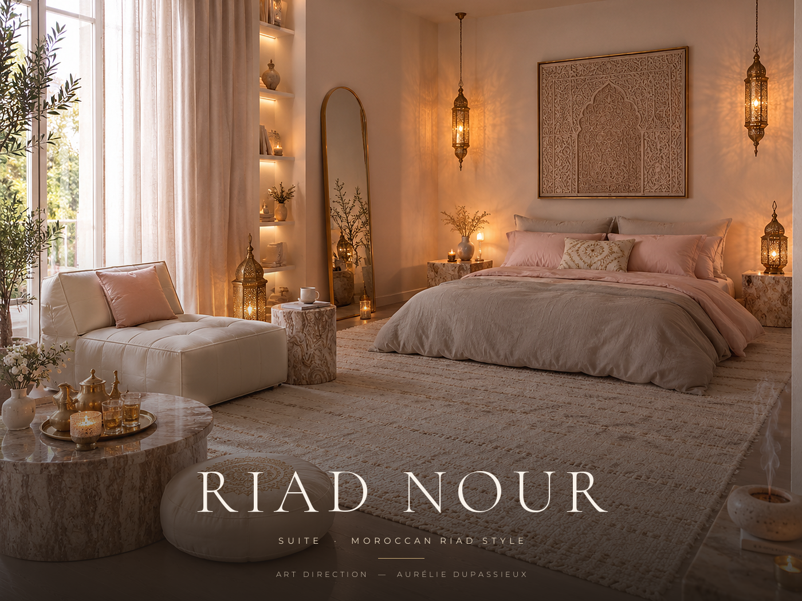
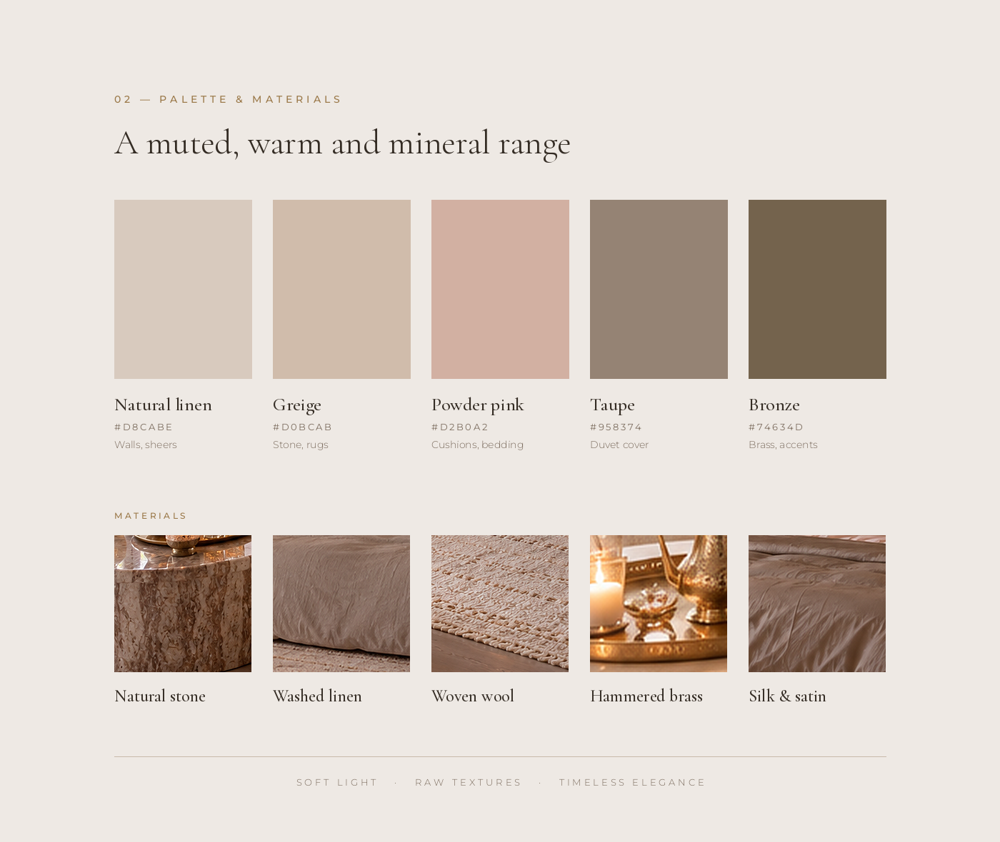
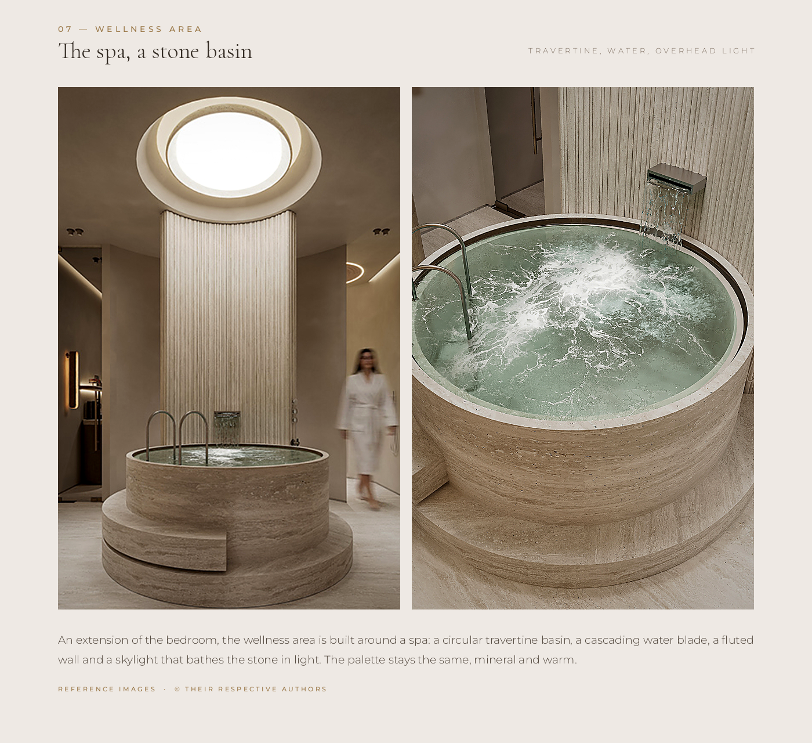
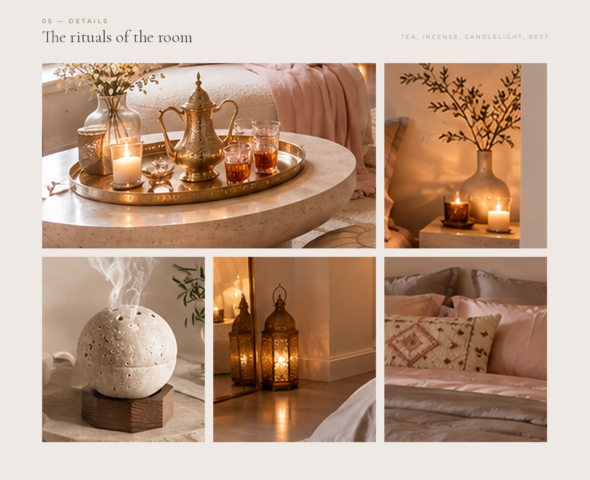
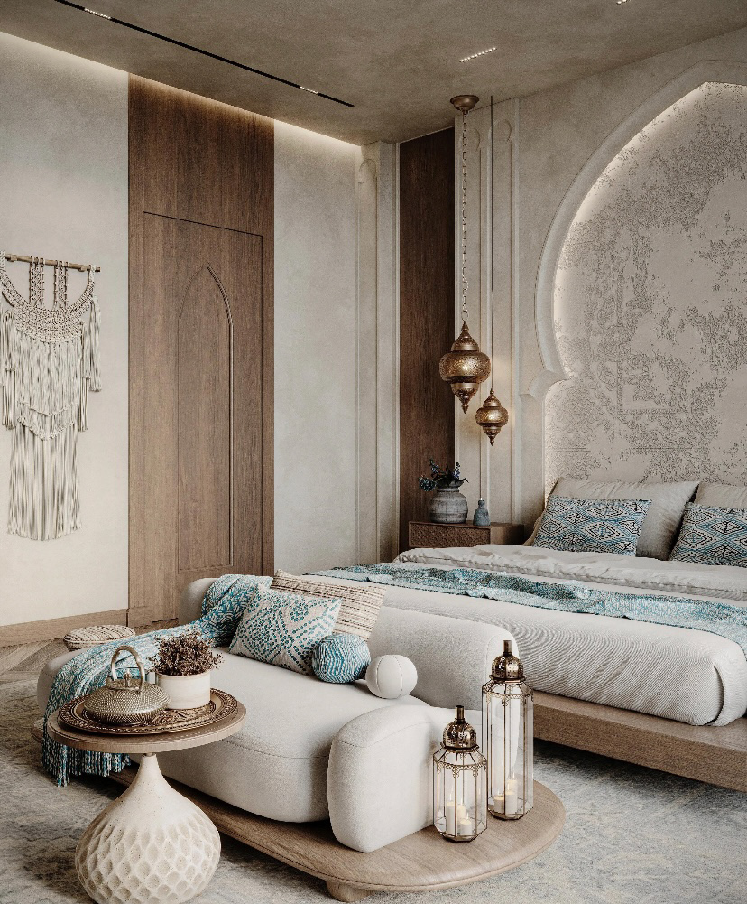

A Moroccan Suite in Soft Light
2026Riad Nour — "light" in Arabic — reinterprets the traditional Moroccan suite through warm minimalism. Natural stone, washed linen, hand-woven wool and chiselled brass compose a soft, mineral palette, extended by a travertine spa.




